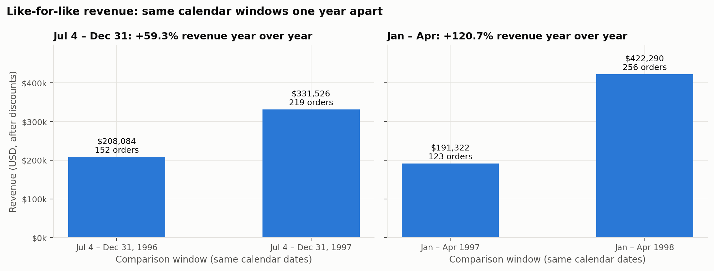
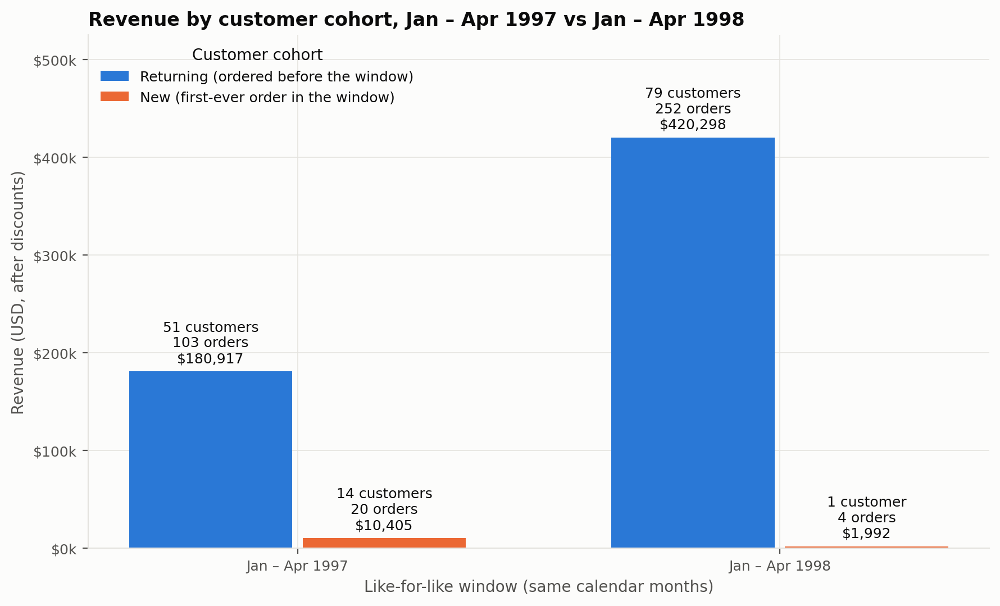

Question 1Is our growth coming from new customers or from existing ones buying more, and can it continue?
Why it matters
If we only look at the revenue growth of 121% (Figure 1), we could justify two opposite decisions for the business. If we know that the growth came from new customers, then we know we should invest in getting even more customers. If the growth came from the customers we already have, we should invest in serving them better. Without more information, we could waste budget investing in the wrong area and not know if the growth can continue.

Analysis
For this question, I compared the months January-April in the years 1997 and 1998. The data covers 23 uneven months, so a full-year comparison would’ve been invalid. I calculated revenue as UnitPrice x Quantity x (1 - Discount). Each client was assigned a group based on their first order in the table. If their first order is within that window, they fall into the “New” bucket, and they fall into “Returning” if they have purchased before. I also took into consideration how many clients in the Customers table had never placed orders.
Main finding
My analysis revealed that almost all the growth came from our existing customers, and new clients basically disappeared (Figure 2). Every existing customer purchased approximately 58% more times and spent 50% more money. At the same time, there are almost no customers that haven’t been “activated,” as 89 of the 91 customers in the database have already placed an order before.

Business interpretation
Since growth is coming from existing customers, we should invest more in how we serve them. The additional money should go to relationship development, purchase reminders, and good customer service, all aspects that contribute to making a customer want to place an additional order.
Question 2How dependent are we on our largest customers, and is that dependency increasing or decreasing?
Why it matters
The concentration of our sales dictates how dependent we are on a subset of customers. If a big share of our total revenue comes from a few customers, losing even one customer could significantly impact the business. To be able to understand if we should diversify or protect what already exists, it’s important to know how concentrated the business is today and whether it’s getting better or worse.
Analysis
Again, I looked at the months January-April in the years 1997 and 1998. A window of four months will naturally show higher concentration than a period of 23 months, simply because there are fewer active customers in it. Comparing 4 months against a complete period would create a tendency that doesn’t exist.
For each window, I ranked clients from greatest to lowest revenue and graphed the cumulative share of revenue against the cumulative share of customers. I compared the top 10 customers in each window, not just by their share.
Main finding
Concentration is high and did not change in 1998 (Figure 3). Ten customers represent more than half of revenues in both windows. The customer base grew by 15 customers and the top-10 share moved by one-tenth of a percentage point. The customers themselves, however, changed significantly: only 6 of the top 10 customers are the same ones in both windows (Table 1). Four customers joined the top 10 and four exited the list. The numbers say that nothing changed, but 40% of customers that account for over 50% of the business changed in just one year.

Table of the 14 customers who were in the top 10 by revenue in at least one window. Six were in the top 10 in both windows, four only in January to April 1998, and four only in January to April 1997. Each row gives the customer's rank and revenue in both windows.
| Customer ID | Company | Rank, Jan–Apr 1997 | Revenue, Jan–Apr 1997 (USD) | Rank, Jan–Apr 1998 | Revenue, Jan–Apr 1998 (USD) | In the top 10 |
|---|---|---|---|---|---|---|
| QUICK | QUICK-Stop | 2 | 15,585.76 | 1 | 37,217.32 | both |
| ERNSH | Ernst Handel | 1 | 18,883.17 | 2 | 35,992.65 | both |
| SAVEA | Save-a-lot Markets | 4 | 11,650.18 | 3 | 31,979.71 | both |
| HUNGO | Hungry Owl All-Night Grocers | 8 | 5,870.93 | 5 | 20,402.12 | both |
| RATTC | Rattlesnake Canyon Grocery | 3 | 14,364.20 | 6 | 19,982.55 | both |
| SUPRD | Suprêmes délices | 7 | 6,109.48 | 10 | 11,644.60 | both |
| HANAR | Hanari Carnes | — | 0.00 | 4 | 23,821.20 | Jan – Apr 1998 only |
| KOENE | Königlich Essen | 17 | 3,275.00 | 7 | 19,582.77 | Jan – Apr 1998 only |
| WHITC | White Clover Markets | 19 | 3,013.97 | 8 | 14,350.15 | Jan – Apr 1998 only |
| FOLKO | Folk och fä HB | 50 | 497.22 | 9 | 13,644.07 | Jan – Apr 1998 only |
| BOTTM | Bottom-Dollar Markets | 10 | 4,512.25 | 11 | 11,338.55 | Jan – Apr 1997 only |
| HILAA | HILARIÓN-Abastos | 9 | 5,190.68 | 18 | 6,043.20 | Jan – Apr 1997 only |
| SIMOB | Simons bistro | 5 | 11,188.40 | — | 0.00 | Jan – Apr 1997 only |
| MEREP | Mère Paillarde | 6 | 10,420.46 | — | 0.00 | Jan – Apr 1997 only |
Business interpretation
Half of the revenues depend on approximately one in every 8 customers. In the 1998 window, 10 out of 80 customers generated 54% of revenues and the top 2 generated 17%. Losing one of those big customers would create a noticeable change. Moreover, adding 15 customers didn’t really move the share of the top 10 customers. Since the top 10 customer list changes, a fixed list of key customers would quickly become outdated. Therefore, every protection the company puts in place (e.g., service guarantees) has to be reassigned on a recurring basis to always protect the current top customers.
Question 3Which products should we stop carrying, push harder, or reconsider?
Why it matters
The catalogue decisions (what to have in inventory, what to stop selling, what to restock) are made from the status fields in the Product tab. If those fields no longer agree with what customers actually purchase, the business will lose sales that it could’ve made and will leave unmoved money in inventory that no one wants. These two errors are invisible in a revenue report because those only show the products that were sold, but not what could've been sold or what wasn’t sold.
Analysis
I combined each product’s recorded attributes (e.g., discontinued flag, units in stock, units on order, reorder level) with its actual sales over the two like-for-like windows. With this data, I calculated the units sold per month at the recent pace and how many months of inventory are left at that pace. The products were classified into three groups: active products with inventory higher than their reorder level, active products with inventory that’s equal or lower than their reorder level and discontinued products.
Main finding
The list of discontinued products does not align with what the customers purchase. Those eight products sold 914 units in the 1997 window and 1,633 units in the 1998 window, an increase of 79% (Table 2). They generated $58,213 between January and April of 1998 (13.8% of all revenues in that window). One product, Thüringer Rostbratwurst, generated $33,683 (8% of all revenues in that window). Four of the eight products have no stock or orders to the supplier, but they somehow have orders until the end of April and beginning of May of 1998 (Figure 4). The business is selling products that it decided not to replace.
Table of unit totals for three product groups: 51 active products with stock above their reorder level, 18 active products at or below their reorder level, and 8 discontinued products. The discontinued products sold 914 units in January to April 1997 and 1,633 units in January to April 1998, with 101 units in stock and none on order.
| Status | Products | Units sold, Jan–Apr 1997 | Units sold, Jan–Apr 1998 | Units in stock | Units on order |
|---|---|---|---|---|---|
| Active, stock above reorder level | 51 | 5196 | 10620 | 2814 | 0 |
| Active, stock at/below reorder level | 18 | 2105 | 3073 | 204 | 780 |
| Discontinued | 8 | 914 | 1633 | 101 | 0 |
![Scatter plot of 77 products. The x-axis is average units sold per month from January to April 1998; the y-axis is units in stock from the Product tab. Blue circles are 51 active products with stock above their reorder level, orange triangles are 18 active products at or below their reorder level, and green squares are 8 discontinued products. A diagonal line marks stock equal to one month of sales at the January to April 1998 pace. Four discontinued products sit at zero stock while selling about 34 to 80 units a month, and one discontinued product sells about 131 units a month.](figures/figure4.png)
Business interpretation
The business should reactivate the discontinued products that are still being sold, or it should accept losing 14% of its revenue in that window. They’re not doing either of the two options today: they accept orders for products that won’t be reordered, which leads to stockouts and disappointed customers. It should also clear Mishi Kobe Niku and close it properly. It’s the only product where the discontinued label matches the reality, and its 29 units should either get sold off or written down.